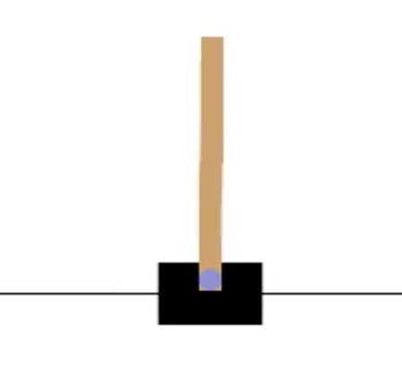

Training and Visualizing a PPO Agent on CartPole using Stable Baselines3
Training and Visualizing a PPO Agent on CartPole using Stable Baselines3
This post details how to train a Proximal Policy Optimization (PPO) agent on the CartPole environment using the stable-baselines3 library and visualize the agent’s performance through video. This exercise replicates the methods demonstrated in Nicholas Renotte’s tutorial, “Reinforcement Learning in 3 Hours | Full Course using Python”, available on YouTube.
The CartPole environment, part of the Gymnasium library, features a simple cart with a pole balanced on top. The cart can move left or right, and the goal is to keep the pole upright. Rewards are given for each time step the pole remains balanced. If the pole deviates more than 15 degrees from the vertical, the episode ends.
In the following sections, I will walk you through the process of training an agent to keep the pole in equilibrium throughout a simulation of 200 time steps, and demonstrate the results using videos of both random and trained policies.

Environment Setup
The following commands are required to set up the environment in Google Colab or a similar environment. These install stable-baselines3, OpenAI Gym (now Gymnasium), and additional tools for rendering and video recording:
!pip install stable_baselines3[extra]
!apt-get install -y xvfb python-opengl ffmpeg
!pip install gymnasium pyvirtualdisplayInitializing the Environment
The classic CartPole-v0 environment is used, where the task is to balance a pole on a cart by applying forces to the left or right. The environment is initialized with render_mode=“rgb_array” to capture frames for rendering videos.
import gymnasium as gym
import imageio
from IPython.display import Video
env = gym.make("CartPole-v0", render_mode="rgb_array")
obs, info = env.reset()
frames = []
done = False
# Capture a single episode with a random policy
episode = 5
for episode in range(1, episode+1):
state = env.reset()
done = False
score = 0
while not done:
frame = env.render() # Capture frame by frame
frames.append(frame)
action = env.action_space.sample() # Random action
obs, reward, done, _, info = env.step(action)
# Save the video
video_filename = '../images/blog/post_18-09-24/cartpole_random_policy.mp4'
imageio.mimsave(video_filename, frames, fps=30)Training the PPO Model
The PPO model is trained for 200,000 timesteps using stable-baselines3. The environment is vectorized using DummyVecEnv, which allows multiple environments to be run in parallel, but in this case, only one instance is used.
import gym
from stable_baselines3 import PPO
from stable_baselines3.common.vec_env import DummyVecEnv
from stable_baselines3.common.evaluation import evaluate_policy
# Define environment
environment_name = "CartPole-v0"
env = gym.make(environment_name)
# Log directory
log_path = '/content/training/logs'
os.makedirs(log_path, exist_ok=True)
# Vectorize the environment for PPO
env = DummyVecEnv([lambda: gym.make(environment_name, render_mode="rgb_array")])
# Train PPO model
model = PPO('MlpPolicy', env, verbose=1, tensorboard_log=log_path)
model.learn(total_timesteps=200000)
# Save the trained model
PPO_Path = '/content/drive/My Drive/training/saved_Models/PPO_Model_Cartpole'
os.makedirs(PPO_Path, exist_ok=True)
model.save(PPO_Path)Evaluating the Model
After training, the model’s performance is evaluated over 10 episodes. The evaluation provides two metrics:
- Mean reward: The average reward across the episodes.
- Standard deviation of reward: A measure of how consistent the performance is across episodes.
model = PPO.load('/content/drive/MyDrive/training/saved_Models/PPO_Model_Cartpole.zip', env=env)
mean_reward, std_reward = evaluate_policy(model, env, n_eval_episodes=10)
print(f"Mean reward: {mean_reward}, Std reward: {std_reward}")Understanding the Metrics
The evaluation outputs:
Mean reward: 200.0, Std reward: 0.0Mean reward: 200.0: This indicates that the agent has consistently achieved the maximum reward of 200 points, the upper limit for the CartPole-v0 environment. It means the agent has learned an optimal policy, balancing the pole perfectly in all episodes.
Standard deviation (Std reward): 0.0: A standard deviation of 0.0 indicates no variation in the agent’s performance across the 10 episodes. This consistency demonstrates that the agent’s behavior is stable and reliable, without any fluctuations in performance.
Visualizing the Trained Agent
After training, the agent’s performance can be visualized by running it in the environment and capturing frames for a video. The following code captures the agent’s behavior for 1,000 timesteps.
# Initialize the environment for video capture
env = DummyVecEnv([lambda: gym.make("CartPole-v0", render_mode="rgb_array")])
obs = env.reset()
frames = []
# Run the trained model and capture frames
for _ in range(1000):
action, _states = model.predict(obs)
obs, reward, done, info = env.step(action)
frames.append(env.render(mode="rgb_array"))
if done:
obs = env.reset()
# Save the video
video_filename = '../images/blog/post_18-09-24/cartpole_trained_agent.mp4'
imageio.mimsave(video_filename, frames, fps=30)Conclusion
This post demonstrates how to train a PPO agent on the CartPole environment using stable-baselines3, evaluate its performance, and visualize the results through video. The trained agent achieves consistent and optimal performance, balancing the pole perfectly across all evaluation episodes. This approach can be applied to other environments and tasks for reinforcement learning research and development.
Credits
The code used in this post is adapted from Nicholas Renotte’s tutorial, “Reinforcement Learning in 3 Hours | Full Course using Python”, available on YouTube. The video provides an excellent walkthrough of training and evaluating reinforcement learning agents using stable-baselines3.